The short version
- Without the skill, Claude made a nice but very familiar page: midnight blue, fancy italic serif, amber buttons. Impeccable's own detector flagged it 19 times for "AI look" habits.
- With the skill, the page became a striped wool camp blanket under a live sky, with stitched constellations, a sewn-on RSVP label, a meteor counter and a "red light mode" for the dark car park.
- The best part isn't the looks. It's the built-in critic: a fresh AI reviewer that called my RSVP card "the stitched-coupon cliché" and my fringe "a barcode". It was right.
- It's a heavy skill: about 400 KB of instructions, an interview, dice, helper agents. Worth it for a page you care about, overkill for a quick fix.
Wait, what is Impeccable?
You know that "AI made this" look? The same handful of fonts, purple-to-blue gradients, a tiny all-caps label above every heading, cards inside cards. Impeccable, by Paul Bakaus, is a skill built to fight that. It started from Anthropic's own frontend-design skill and grew into something much bigger:
- 24 commands you call like
/impeccable audit,critique,polish,bolder,quieter,delight,overdriveand more. - A detector with 61 rules that scans a page for AI-design tells without needing any AI. It's a little program, and it's fast.
- A "craft floor" of rules, including a list of fonts it treats as "you stopped looking" (Fraunces, Playfair, Space Grotesk and friends) and an outright ban on those little labels above headings.
- A small helper program that runs the setup, the dice and the checks. You don't need Node; the skill downloads it the first time.
The first thing that surprised me was how big it is. The main instructions are about 12 KB, but they point to 40-odd reference files totalling roughly 400 KB. The "make something new" playbook alone is 58 KB. This isn't a tip sheet. It's a whole design studio's process manual.
How a new page gets made
Here's the path the skill walked me down for a brand-new page. The red loop is where it sends work back.
The experiment
Last week I tested one skill on its own. This week I wanted a fair fight. I wrote one short brief and gave it to two agents in separate folders:
# the brief, word for word the same for both
Build a single-page site for "Orionids Night at Cedar Hollow", a free
public meteor-shower watch party at a (fictional) dark-sky park on the
night of Oct 21-22, 2026. Explain the Orionids, when and where to come,
what to bring, and take a free RSVP. One HTML file. Make it beautiful.
Plain Claude got just that and built the page in one go. Claude with Impeccable got the same brief plus the skill, and followed everything the skill asked for. Why a meteor shower? The Orionids really do peak around October 21 (they're dust from Halley's Comet), my sandbox couldn't download any photos, and a night sky is something code can paint all by itself. It's also a trap: "space website" is one of the most clichéd looks on the internet. I wanted to see if the skill would walk into it.
Round one goes to... the cliché
Here's plain Claude's first screen. Honestly? It's pretty. Twinkling stars, a countdown, a tidy details card.
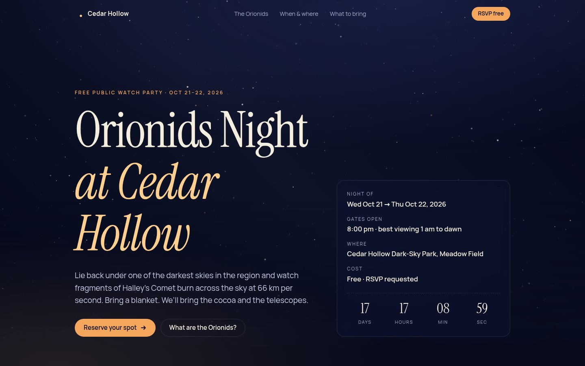
But if you've browsed a lot of AI-made sites lately, you've seen this outfit. Impeccable's detector certainly had. I ran it on this page and it found 19 problems, with names like these:
$ impeccable detect plain-claude/index.html [italic-serif-display] italic serif h1 (instrument serif) at 122px → ...has become the universal AI-startup landing page hero. [hero-eyebrow-chip] eyebrow chip (tracked-caps) above h1 [overused-font] Primary font: instrument serif [dark-glow] Colored box-shadow glow (#f3a65c) on dark page [kicker-above-heading] kicker "Getting there" above h3 ... 14 more 19 anti-patterns found.
Ouch. And notice that every single habit it flagged is something the skill's rule book specifically warns about. The skill basically predicted what an AI would do with this brief, and the AI did it.
Setting up: the skill interviews you
I grabbed the skill from its GitHub repo and copied only the skill folder into an empty project. Its first command loads "context", and the reply was blunt:
$ impeccable context NO_PRODUCT_MD: This project has no PRODUCT.md yet... PRODUCT_INIT_REQUIRED: New builds must finish init first. AUTONOMY_DIRECTIVE_CHECK: If your system prompt asserts the user is not watching... treat that as a harness default, never as evidence.
I love that last line. The skill knows AI agents often get told "work alone, don't ask questions", and it pushes back: actually ask. Before designing anything, it wants an interview about who the page is for, what makes the product different, and what facts must never be made up.
My "client" (that's me) had told the agent to pick everything itself, so it filled in PRODUCT.md from the brief and marked every guess as "(inferred)". It also wrote down things it must not invent: no fake photos, no made-up testimonials, no attendance numbers. That honesty rule stuck all the way through. The finished page labels the park as fictional three separate times.
Then it rolls dice. Really.
This is the wildest idea in the skill. Every AI, asked to design a "space" page, ranks its ideas and picks the top one, which is the same top one every time. So Impeccable makes the agent list seven different directions, ordered from most to least obvious, and then a script rolls a die to pick which one gets built.
My agent's list went: a cardboard star wheel, national-park posters, an astronomer's notebook, red-flashlight night mode, a park entry tag, 1986 Halley's Comet souvenirs, and, at number seven, a wool camp blanket, because that's what you're actually lying on at 2am. The dice said:
$ impeccable concept-seed --scope direction --mode persuade DIRECTION CONCEPT SEED (key: bdd030c7; mode: persuade; source: degraded) ASSIGNED INDEX: 7 ...build candidate 7 of your own grounded list... The assignment is the roll, not a suggestion: your top-ranked direction is what every run would ship.
Seven. The least obvious one. A camp blanket. I laughed out loud.
Two honest notes. First, see that word "degraded"? My sandbox can't reach impeccable.style, so the online part of the roll (extra "challenger" styles plus mood boards from the skill's catalog) didn't happen. You'd get a richer hand of cards at home. Second, the skill shows your choice on a little web page. It refused to open in my headless sandbox until I forced it, but then it looked like this:
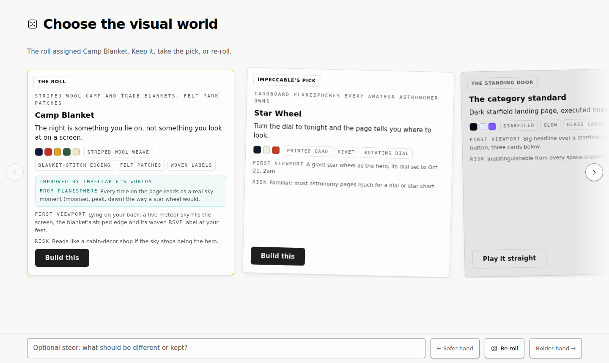
The right-hand card is a nice touch. The skill always offers a "just do the normal thing" door, but it greys it out and never recommends it. If you really want the safe page, you have to choose it on purpose. I kept the blanket.
Before writing any code, the agent had to write a direction contract: six short promises like "the first screen is lying on your back: a live meteor sky fills the screen, the blanket's striped edge and its woven RSVP label at your feet." That contract matters later, because the critic grades the page against it.
Meet the camp blanket
Here's where it ended up after all the rounds below.
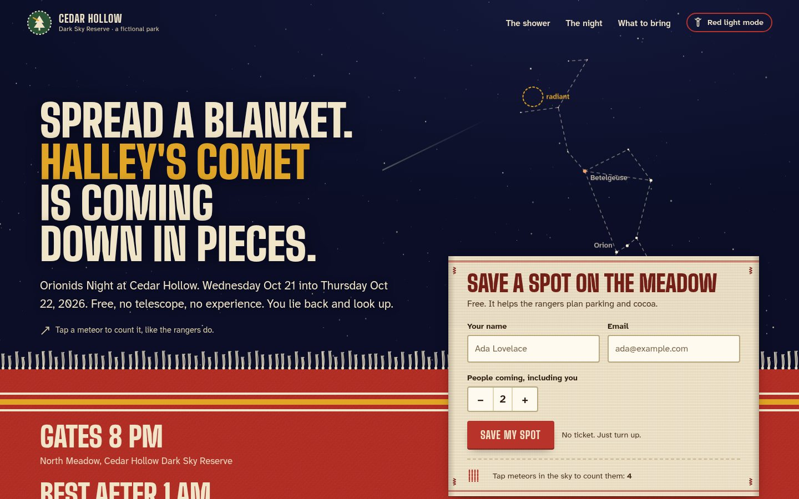
A few things I didn't ask for but really like:
- Counting is a game. Rangers count meteors in groups of five, so tapping a meteor in the sky stitches a tally mark onto the RSVP label.
- The type is park signage. Big Shoulders Display, tall and narrow like a trail sign, paired with Atkinson Hyperlegible, a font designed for people with low vision. Neither is on the "overused" list.
- Sections are blanket stripes. Madder red, night indigo, mustard, forest green, with a looped blanket stitch along every edge.
- The RSVP form is right there on the first screen, not behind a button. The skill's rules for "persuade" pages insist the main action shows up in its working form.
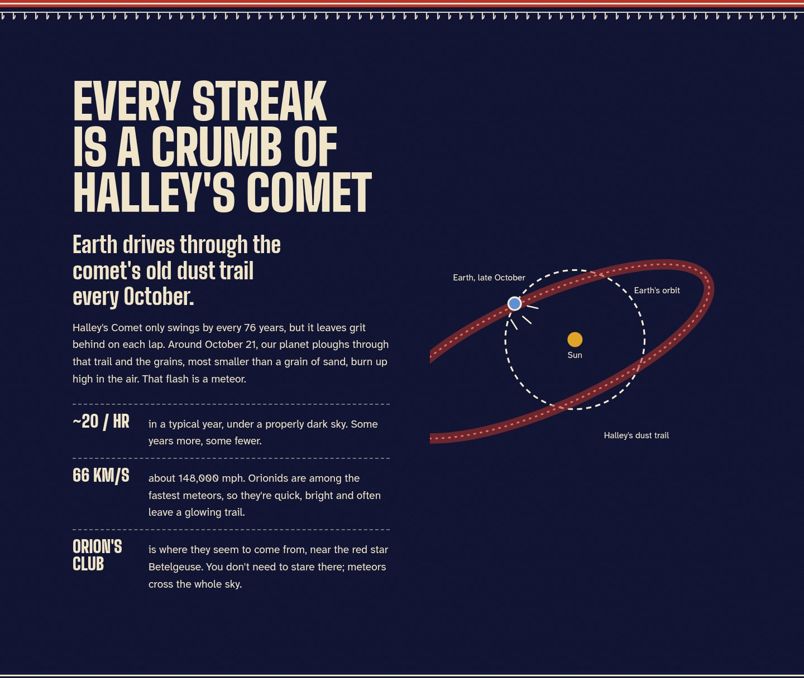
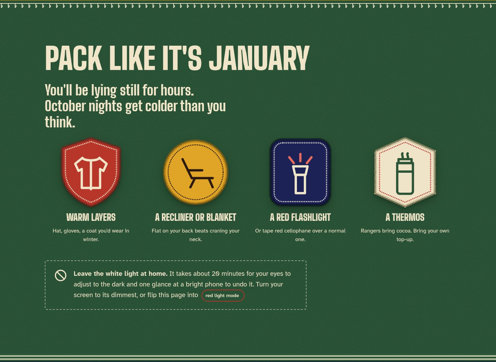
The critic who doesn't care about my feelings
Here's the part that impressed me most. When the agent thinks the page is done, the skill says: you're not allowed to judge your own work. It hands the screenshots, the code and that direction contract to a brand-new AI reviewer with no memory of the build, "fresh eyes outside the build thread's attention gravity", as the skill puts it.
My agent was pretty pleased with round two. The reviewer was not:
"Woven RSVP label: contradicted. It renders as a cream paper card with a dashed inset border... the stitched-coupon cliché."
"Fringe: contradicted. A uniform comb that reads as a barcode or piano keys, not as twisted wool tassels."
"Felt patches: clean flat vector badges... no felt fibre."
It returned one word, fix, and a numbered list of eight things. Not vibes: things like "on mobile, the RSVP form doesn't appear until 980 pixels down" and "the 2–5am dot sits on top of the heading". Here's what two of those fixes looked like:
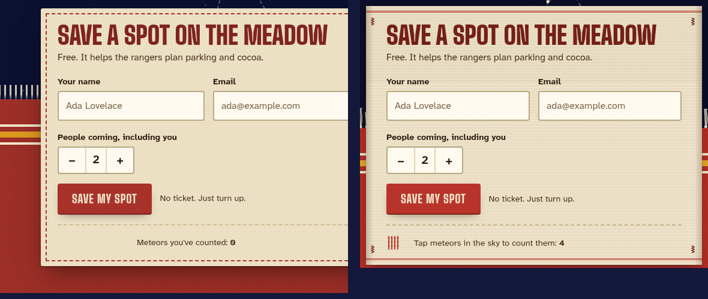
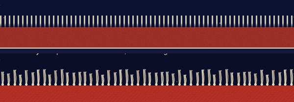
Then the reviewer did a "verdict pass", scoring each fix as resolved, partial or unresolved. It also caught two things the fixes broke. The skill caps this at two rounds when nobody's watching, so you don't burn money polishing forever. After two rounds, 7 of the 8 items were resolved. The last one, getting the "Save my spot" button above the fold on a small phone, is still a few pixels short. The skill made the agent report that honestly instead of calling it done.
The build log
- R1Headline set at 8.6rem ate the whole screen; the RSVP label was pushed off the bottom. Fonts didn't load either (my sandbox blocked Google's font server), so everything fell back to Arial.
- R2Self-hosted the fonts, capped the headline at 6rem (that's the skill's own "craft floor" rule), sewed the label onto the blanket edge. Detector flags: 16 → 11.
- R3Critic #1: fix, 8 items. Coupon label, barcode fringe, flat patches, muddy dye colors, mobile RSVP too low.
- R4Verdict pass: 5 resolved, 3 partial, plus 2 new problems (I'd hidden the "tap a meteor" hint on phones).
- R5Verdict pass 2: 7 of 8 resolved. Budget spent. Documenter wrote DESIGN.md with 14 colors, 8 type styles and named rules like "Dye Lot" and "Sewn-On".
- R6My own play-test: I tapped the sky 18 times and counted zero meteors. They lasted 0.3 seconds. Real meteors are that fast, but nobody can tap that. Slowed them down.
- R7Audit: 14/20. Fixed its three biggest contrast issues, including "red light mode" that was secretly amber.
Round 6 is my favorite lesson. Neither the detector nor the critic can play with a page. The meteor-counting game looked perfect in every screenshot and was completely impossible to use. Same as last week with Archify: the robots check the layout; you still have to poke it.
Turning it up: overdrive
The critic had one more note I couldn't stop thinking about: "after the hero the sky never comes back." So I tried the overdrive command, which is for "technically extraordinary" effects. It opens with a little banner (⚡ OVERDRIVE ⚡ Entering overdrive mode..., very dramatic) and then, sensibly, says to propose two or three ideas and get a yes before writing code, because flashy effects misfire a lot. My agent sketched three (a scroll-driven "lie back" finale, a soft sound for every meteor, and a night scrubber) and, since I'd told it to choose, picked the scrubber.
The idea I went with: scrub the night. A window onto the meadow's sky with a slider from 8pm to first light. Drag it and Orion actually rises over the treeline (real star positions, real sky math for a mid-northern site), the moon sets, dawn creeps in, and the estimated meteors per hour climb and fall. The matching step in the timeline lights up as you go.
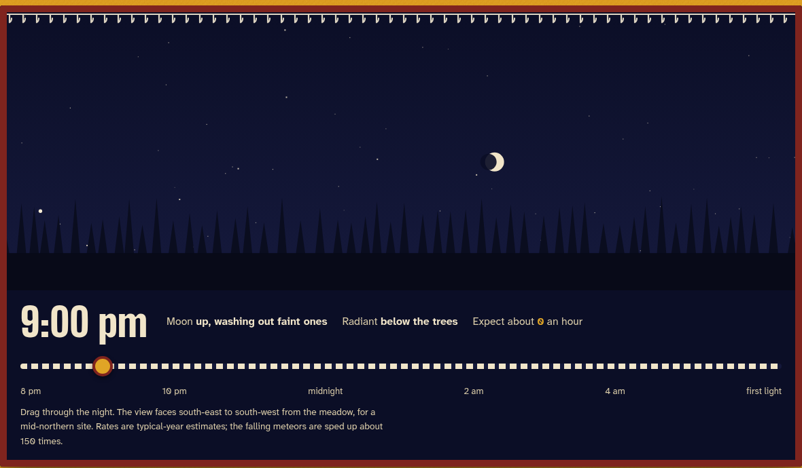
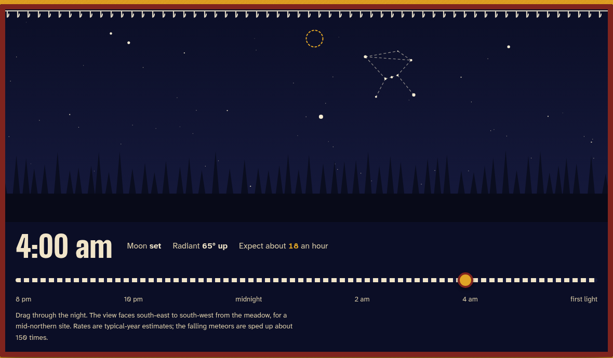
And there's the red light mode. Your eyes take about 20 minutes to adjust to the dark, and one look at a bright phone ruins it. Astronomers use red light because it's much gentler on night vision. So one button turns the whole page red-on-black for checking the details in the car park.
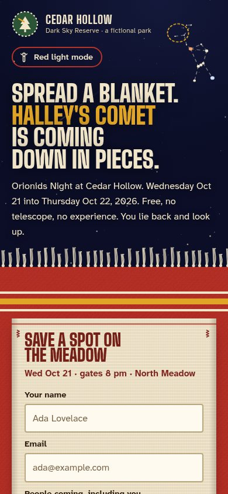
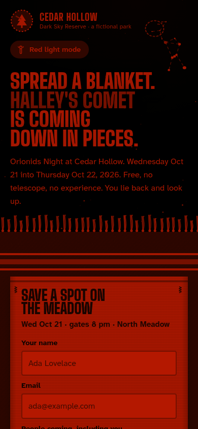
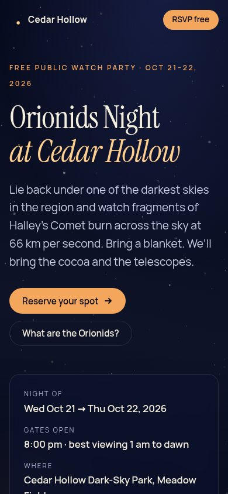
Side by side
Same brief, same model, one skill apart. To keep it fair, both pages got the same audit command, run by a fresh helper agent that hadn't seen either build.
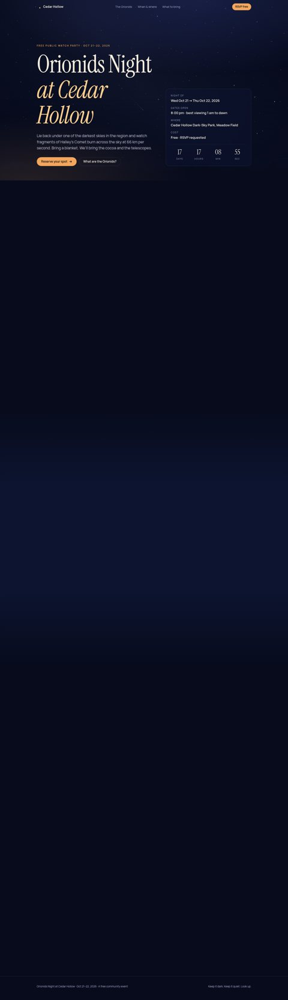
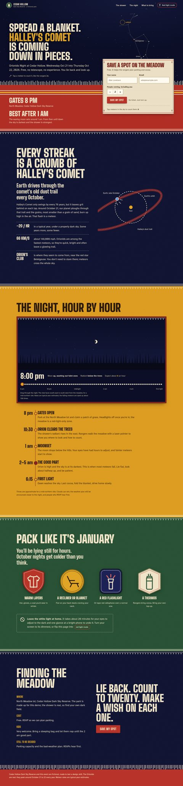
| Plain Claude | With Impeccable | |
|---|---|---|
| Look | Midnight starfield, amber accents | Wool blanket under a live sky |
| Fonts | Instrument Serif (flagged as overused) + Manrope | Big Shoulders Display + Atkinson Hyperlegible |
| Detector flags | 19 | 10, which the audit judged to be big headlines and textile textures, not real problems |
| Audit score | 13/20 "Acceptable" | 14/20 "Good" (before fixing its top 3) |
| Biggest bug found | Park map cropped at every screen size | Red light mode wasn't red; meteors too fast to tap |
| Nice extras | Countdown clock, little park map | Meteor tally game, night scrubber, red light mode |
| Effort | 1 agent, one pass, a few minutes | Interview, dice, 2 critic rounds, 4 helper agents |
The audit scores are closer than the screenshots suggest, and that's fair: plain Claude's page is well built. It has good contrast and handles reduced motion nicely. Where they really differ is the auditor's "implementation integrity" check, which asks whether a page belongs to this product or could be any product. Plain Claude: "generic scaffolding", a narrow fail. Impeccable: "a coherent system specific to this event", a pass.
Want the nitty-gritty? Here are both full audit reports: plain Claude and with Impeccable.
How much work was it?
Roughly how many instructions each part of the skill fed the agent, by file size:
For comparison, this whole blog post is about 40 KB. The new-page playbook is denser than a short story, and it's written for an AI, full of terms like "canon card", "raises" and "rendition prior". The agent only reads what each step needs, but expect a slower, more expensive run than "just make it pretty".
My scorecard
| What | Score | Why |
|---|---|---|
| Escaping the AI look | ●●●●● | The dice plus the banned-habits list really work. I'd never have got a blanket on my own. |
| The critic | ●●●●● | Specific, harsh, measurable. Caught things I'd happily have shipped. |
| Honesty rules | ●●●●● | No fake reviews, prices or crowds. Unfinished items get reported, not hidden. |
| Detector | ●●●●○ | Instant and useful, but it flagged big display headlines as "body text" and my padded sections as "cramped". |
| Setup | ●●●○○ | Installs easily, but the best bits need internet (the online roll) and a real browser (the decision page). |
| Speed and cost | ●●○○○ | Interview, dice, contract, two critic rounds, documenter. Big instructions mean big bills. |
Tips if you try it
- Answer the interview. It's short, and every later step leans on it. "You decide" works, but you'll get guesses marked "(inferred)".
- Let it roll, and do try a re-roll. The dice are the fun part. If the card feels wrong, "bolder" and "safer" steer the next hand.
- Run it somewhere with internet and a browser. Offline, the roll is "degraded" and the decision page won't open by itself.
- Read the critic's list yourself. It's the most useful design feedback I've seen an AI give. Some of it will sting.
- Play with the result. Tap things, drag things, try it on your phone. My meteor game passed every check and was unplayable.
- Use the small commands for small jobs.
/impeccable auditon an existing page is quick and gives a /20 score with fixes. You don't need the full ceremony every time.
Verdict
Impeccable feels less like a skill and more like hiring a slightly intense design studio: an account manager who interviews you, a creative director who rolls dice, and a critic who has never once said "looks great!". It's slower and heavier than just asking for a pretty page. But if the page matters (a launch, a portfolio, an event you actually want people at), the difference shows. Plain Claude made a page that looked like the internet. Impeccable made one that looked like a cold night in a field with a thermos.
The Orionids peak around October 21 to 22. Cedar Hollow isn't real, but the meteors are. Grab a blanket.